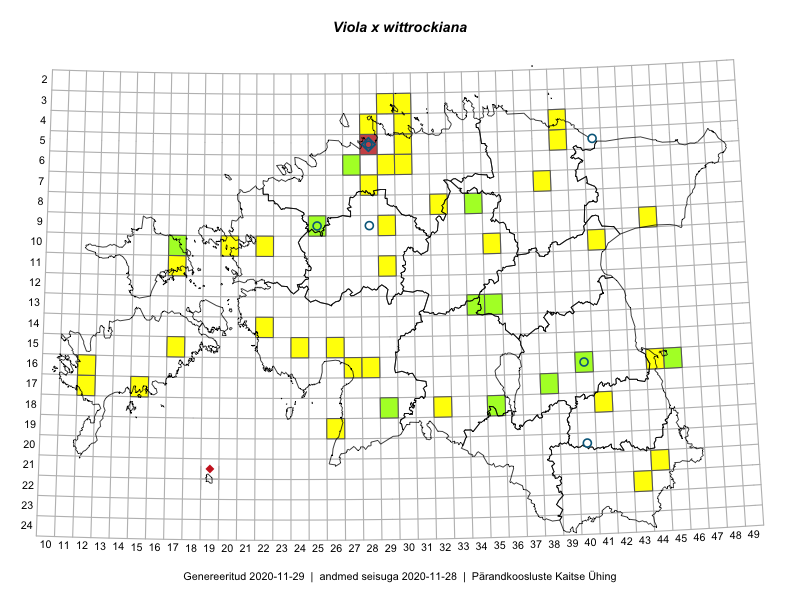

Viola x wittrockiana
Uuendatud: 2016-12-01
Kaardile koondatud taksonid: Viola wittrockiana Gams ex Nauenb. & Buttler; Viola x wittrockiana Gams ex Kappert

Kaart põhineb 36 kirjel.
Kuvatud viited 20 esimesele andmebaasikirjele, ülejäänud PlutoFis
- Toomas Kukk, Eerik Leibak: 2015-08-12: 10-17: ala
- Toomas Kukk, Eerik Leibak: 2015-08-12: 10-17: GPS punkt
- Toomas Kukk, Raivo Kalle: 2015-05-14: 10-41: GPS punkt
- Toomas Kukk, Eerik Leibak: 2015-07-29: 16-45: ala
- Toomas Kukk, Eerik Leibak: 2015-07-29: 16-45: GPS punkt
- Toomas Kukk, Eerik Leibak: 2015-07-29: 16-45: GPS punkt
- Toomas Kukk, Eerik Leibak: 2015-07-29: 16-44: ala
- Toomas Kukk, Eerik Leibak: 2015-07-29: 16-44: GPS punkt
- Indrek Tammekänd: 2015-07-15: 15-24: GPS punkt
- Indrek Tammekänd: 2015-05-31: 14-22: GPS punkt
- Ott Luuk, Toivo Sepp: 2015-05-18: 11-29: GPS punkt
- Mari Reitalu: 2015-08-23: 16-12: ala
- Mari Reitalu: 2015-08-23: 16-12: GPS punkt
- Maria Abakumova, Tiit Hallikma: 2015-07-09: 18-32: GPS punkt
- Elle Rajandu: 2015-04-25: 16-40: GPS punkt
- Tiina Elvisto: 2015-05-04: 03-29: ala
- Tiina Elvisto: 2015-05-04: 03-30: ala
- Ott Luuk, Tiit Hallikma: 2016-05-19: 04-39: ala
- Ott Luuk, Tiit Hallikma: 2016-05-19: 05-39: ala
- Eerik Leibak: 2016-05-18: 09-44: ala